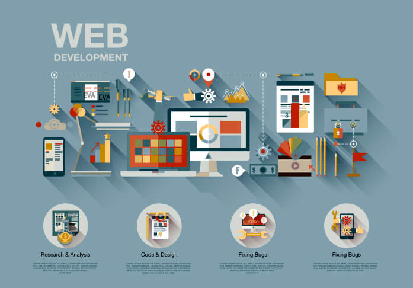

Web Design
Le web design est l’art d’allier le beau au pratique, de créer des supports de contenus (sites web…) à la fois élégants et proposant une bonne expérience utilisateur.

L'expérience utilisateur ne s'arrête pas à votre site web. Dans cette ère digitale, offrir une application mobile de qualité peut décupler votre portée et votre engagement client. Notre équipe maîtrise le développement d'applications web et mobile, assurant une transition fluide entre tous les points de contact de votre entreprise sur internet.